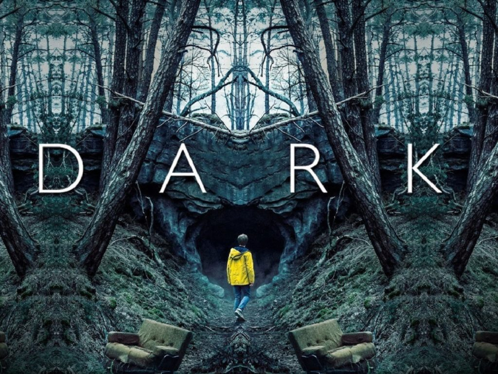

Séries favoritas
Eu gosto muito de assistir séries e duas das minhas favoritas são Breaking Bad e Dark. Breaking Bad conta a história de um professor de química que descobre um câncer e passa, inicialmente, a vender drogas para custear seu tratamento.
